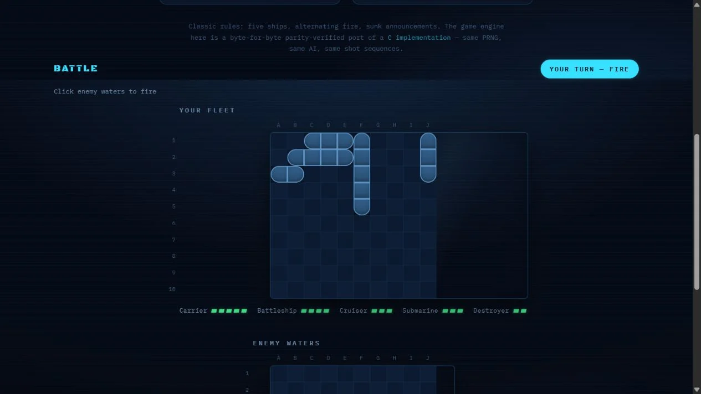

AI & ML2024
Battleship
A classic game, with an opponent that reasons from every shot.
See it in action
Project preview
A view of the working project. Open the demo to explore it.
The challenge
Build a Battleship opponent that reasons from observed shots and behaves consistently across two runtimes.
The idea
Score every legal placement of the remaining ships, then aim at the most likely cell.
The build
A portable C11 engine and a matching JavaScript version run the game. Seeded replays compare fleet layouts, shots and results between engines, alongside board and AI tests.
What came out of it
A playable terminal and browser game, against the computer or a friend, with deterministic engine-parity checks. The opponent uses probability-based reasoning rather than a trained machine-learning model.
More technical detail in the project repository. Implementation notes ↗